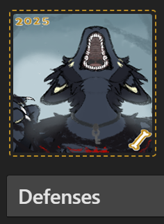
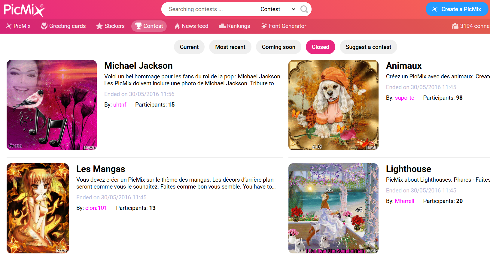
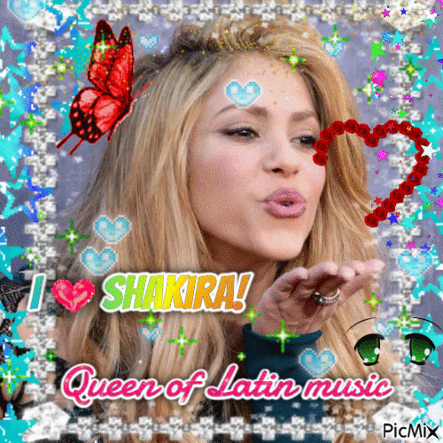

Praxis Project!!
How did amateur digital art in the 2000s-2010s reflect ongoing digital culture?
Note: This page is best viewed in landscape mode on desktop.
Legend: Sections enclosed by dotted yellow borders include content made by me.
Personal Identity
Digital art, for many amateur artists, presented itself as a chance to construct one's own identity. People could make their own avatars, personas, OCs (original characters), and build their own digital profiles/websites to express themselves. This meant that they could connect through digital art in a genuine, sincere way that no other medium could offer.
A popular web-hosting service for user-made websites was GeoCities (1994-2009). The ease of use of Geocities helped propel it in popularity, and it defined the early quirky amateur internet aesthetic, with neon backgrounds, animated GIFs, and wacky fonts. Aesthetic choices were often borne out of digital limitations. For example, the content of this site is mainly contained in a small box. This was to make sure that websites were viewable on displays with smaller aspect ratios like 4:3.
For many, website development was a form of art. It also served as a place of unique self expression, as Geocities allowed anyone to personalize their own website as they wished. Altogether, the Geocities world made for a vibrant display of digital culture.
Although Geocities is now discontinued, Neocities (2013 and onwards), a free web hosting service, launched as an archive for Geocities sites. It is currently maintained as a tool to facilitate beginners in making their first websites. You can check out a dedicated Geocities archival website, The Geocities Gallery, here. It has been a great aesthetic inspiration for this project. The original host for this site was Neocities, but you're viewing this backup copy on GitHub due to unexpected Neocities downtime.
Participatory Culture
Fanart
Fanart is artwork created by fans of existing pop culture. It is made as a tribute or expression of fandom and not commissioned or endorsed by the original creators. In addition to developing art skills, fanart lets amateur artists build community connection by celebrating shared interests with other fans, and allows for personal interpretation of canon media. Sites like DeviantArt (2000 and onwards) and Tumblr (2007 and onwards) were major sharing hubs for media like fanart and also original content.
 This is fanart of a character from Berserk, a dark fantasy manga series that has been running since 1989, with an anime adaptation in 1997. To get the amateur digital art feeling, I drew this with a mouse on my laptop using the program JS Paint, a browser-based clone of the retired Windows XP version of Microsoft paint.
This is fanart of a character from Berserk, a dark fantasy manga series that has been running since 1989, with an anime adaptation in 1997. To get the amateur digital art feeling, I drew this with a mouse on my laptop using the program JS Paint, a browser-based clone of the retired Windows XP version of Microsoft paint.
OCs
Original Characters, or OCs, are fictional original characters. While one can make an original character for personal enjoyment, OCs are often extensions of existing franchises. Many OCs are inspired by preexisting characters.
 I drew this with a mouse on my laptop using MS Paint. The girl on the left with blue hair is fanart of a character from Lucky Star, a comic strip manga series from 2003 with an anime adaptation in 2007. The girl on the right with cyan hair is an original character (OC) that I made. OCs often exist in fandoms and participatory culture as fan-created extensions of existing media worlds, although they can also exist within original worlds. This style of cute anime girls with colourful hair and large eyes was known as "moe", a term meaning something that evokes a deep affection. Moe originated sometime around the 1990s and was a core part of internet culture when it was popularized during the 2000s.
I drew this with a mouse on my laptop using MS Paint. The girl on the left with blue hair is fanart of a character from Lucky Star, a comic strip manga series from 2003 with an anime adaptation in 2007. The girl on the right with cyan hair is an original character (OC) that I made. OCs often exist in fandoms and participatory culture as fan-created extensions of existing media worlds, although they can also exist within original worlds. This style of cute anime girls with colourful hair and large eyes was known as "moe", a term meaning something that evokes a deep affection. Moe originated sometime around the 1990s and was a core part of internet culture when it was popularized during the 2000s.
Art Fight
Art Fight, an annual art challenge first conceived in 2007, is a prime example of how original characters can create a community and culture. Originally hosted on a small forum, artfight.net was established in 2016 and available for anyone on the internet to join, with over 600,000 participants in 2025 alone.
On Art Fight, participants are encouraged to "attack" (draw) one another's OCs to gain points for their own team. Further details are available on their about page.

I've participated in Art Fight for the past two years, with this month (June 2026) marking my third. This is a screenshot of an attack I made to a friend's fursona.A persona (often shorted to sona), in the context of digital art culture, is an illustrated avatar or alter ego of the creator. Some people may create personas to represent idealized versions of themselves. It is a form of original character (OC). A fursona, like a persona, is an avatar/alter ego of the creator, but takes usually on the form of an anthropomorphic animal. In addition to self-identity, people often make personas/fursonas to fit within a larger community, and to be drawn with other personas/fursonas.
Creative Expression
GIFs
GIFs, or Graphics Interchange Format files, are short looping animations widely used across the internet in the 2000-2010s era. They is often used to express emotions, reactions, and jokes. Early popular platforms allowing users to create GIFs include Blingee (2006-2015) and PicMix (2012 and onwards). These sites featured a massive user-uploaded library of animated stamps, graphics, and photo effects. These website pioneered the iconic glittery, maximalist Y2K era GIFs.

Because Blingee had shut down so early, I only had the chance to experience PicMix. Even though the Y2K style is now considered antiquated, PicMix has a large and thriving userbase, operating similarly to modern social media, with the ability to rate and comment on other's works, build your own profile (with a comments section), and even host contests on popular cultural touchpoints for other creators to make GIFs about and compete for the most votes. You can add other creators as friends to your account, and send GIFs as gifts to other creators.

Although it is possible to make more "modern" GIFs on picmix with the newer stamps/stickers uploaded by users, it is common to see this flashy Y2K aesthetic as a tribute/nostalgic throwback. Many of the contests are centred around characters from games, movies, and TV series that the creator is a fan of, or other currently trending cultural sensations, like music artists, aesthetics, and events. Thus, I decided to make my GIF based on Shakira, a popular artist from the early 2000s that has stayed relevant throughout the 2010s.After making a GIF, creators often upload it onto GIF-sharing sites like Giphy (2013 and onwards) or Tenor (2014 and onwards). These websites served as central hubs for internet culture, with live uploads directly reflecting digital trends, memes, news, language, and culture in general.
After being rebranded from Riffsy, Tenor was bought by Google in 2018. If you've ever sent a GIF from WhatsApp, Facebook, Apple iMessage, Twitter (X), Discord, or LinkedIn, you've likely used Tenor's GIFs and search engine. Unfortunately, Google announced this year that the Tenor API would be decommissioned at the end of this very month (June 2026), marking the end of over a decade-long status as a digital cornerstone. This platform death is a common trend among sites that host early internet content, posing an issue to those who wish to study the past. Fortunately, archival tools like the Wayback Machine help preserve the important relics of the past, and have been a great help to the research of projects like this.
In true 2000s fashion, you can visit a Wayback Machine archive of this very page here.
Thank you for visiting!